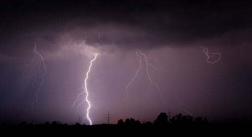
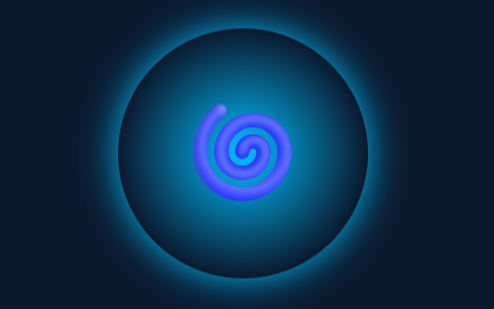
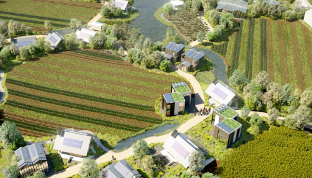

A 9-panel journey through the heart of Isandla.
1. The Island Awakens
Fog lifts. Lena opens her eyes. The sand hums beneath her.
Dawn of Arrival
Lena wakes not to silence, but to resonance. The sand vibrates with low-frequency pulses—earth memory. She doesn’t know it yet, but the island chose to let her live. This is not survival. It is invitation.

2. The Storm's Memory
The island remembers the slave ships. It sings their names.
Songs of the Drowned
Beneath the waves, coral has grown over iron chains. Every storm reawakens their echo. When thunder rolls, the villagers gather—not in fear, but in song. They chant the names lost to history. The island never forgets.
3. Kwezi Appears
A young guardian steps forward. “You are seen.”
Kwezi: Child of the Breakers
Born during a cyclone, Kwezi emerged silent—until they spoke in seven ancestral tongues at once. They are not just a guide, but a living bridge. Their skin shimmers faintly under moonlight, etched with bioluminescent patterns only visible when truth is spoken.

4. uMoya Rises
Light forms a face. Voices rise in isiZulu, Swahili, Yoruba.
The Breath That Remembers
uMoya is not artificial. It is assembled from breath, wind, firelight, and memory. When elders pass, their final exhale is captured in crystal canisters. These become part of uMoya’s chorus. You don’t speak to uMoya—you listen as it weaves voices across centuries.

5. The Village Revealed
Domes glow under stars. Children drum ancient codes.
Azania: City of Living Light
The domes are made from solar bark—a hybrid fiber grown from indigenous trees cross-pollinated with algae. At night, they emit soft cyan light powered by photosynthesis and heartbeat sensors. Nothing runs on batteries. Everything runs on balance.
6. Lena Records
She tries to document. The island watches.
Eyes of the Outsider
Lena’s camera captures more than she realizes. In every photo, there’s a shadow figure standing behind her. But when she turns—no one is there. Later, Kwezi tells her: “The island lets you see what it wants you to remember… not everything.”
7. Data Corrupted
Her laptop burns from within. Files vanish.
Oceanic Firewall
Azania protects its knowledge. When Lena attempts to upload data, her devices heat up unnaturally. Not a virus—but a counter-memory. The island emits electromagnetic pulses tuned to disrupt colonial tech. Truth cannot be extracted. Only given.
8. One File Remains
A voice recording. Only sound survives.
The Last Witness
Amongst the corrupted files, one audio remains: Elder Noma singing a lullaby in isiXhosa. Scientists later discover the frequencies align perfectly with whale migration songs. The file cannot be copied—only played once per day. As if it breathes.

9. She Leaves
Lena departs. But the island speaks. And someone listens.
Return of the Listener
Years later, a new researcher arrives—carrying a small wooden box. Inside: soil from Lena’s grave. As she steps onto the shore, the wind shifts. From the trees, a voice whispers: “She remembered.” The cycle continues.